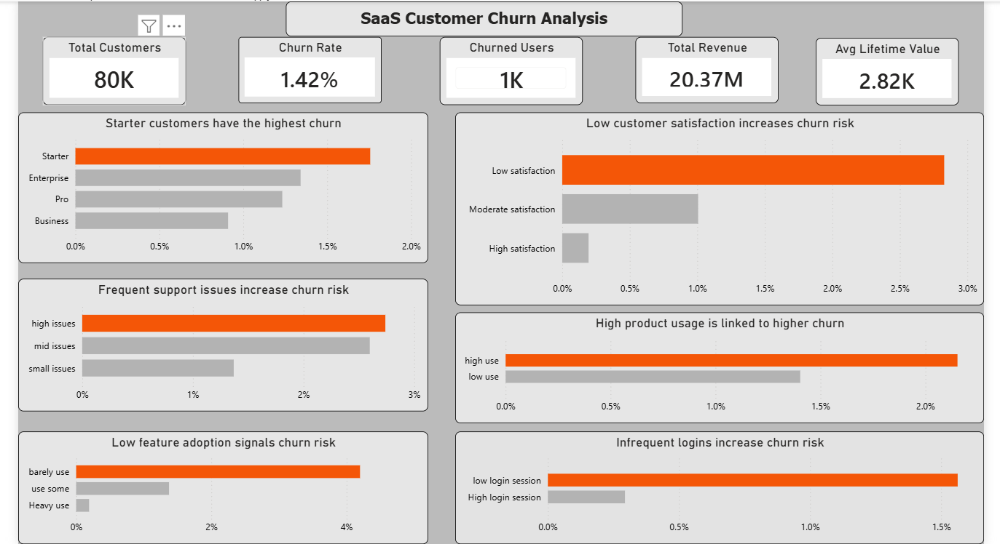

SaaS Customer Churn Analysis
View Detailed Report
Back To Portfolio
Project Overview
Customer churn is one of the biggest challenges facing SaaS businesses because losing customers directly affects recurring revenue and long-term growth. In this project, I analyzed customer behavior to identify why customers leave, uncover the factors contributing to churn, and provide insights that can help improve customer retention.
Goal
To identify the key drivers behind customer churn, understand customer behaviour, evaluate customer engagement, and recommend practical actions that can help improve retention and customer lifetime value.
Process
- I prepared and explored customer subscription and usage data for analysis.
- I used PostgreSQL to answer business questions related to customer churn and retention.
- I analyzed customer satisfaction, support tickets, login behaviour, feature adoption, product usage, and subscription plans.
- I built an interactive Power BI dashboard that communicates the major factors influencing customer churn.
Key Insights
- Starter customers recorded the highest churn rate among all subscription plans.
- Customers with low satisfaction scores were significantly more likely to churn.
- Frequent support issues increased customer churn risk.
- Lower feature adoption was associated with higher customer churn.
- Customers who logged in less frequently were more likely to leave the platform.
- Further investigation showed that high product usage alone did not guarantee customer retention because many churned users also experienced low satisfaction and frequent support issues.
Dashboard Preview
